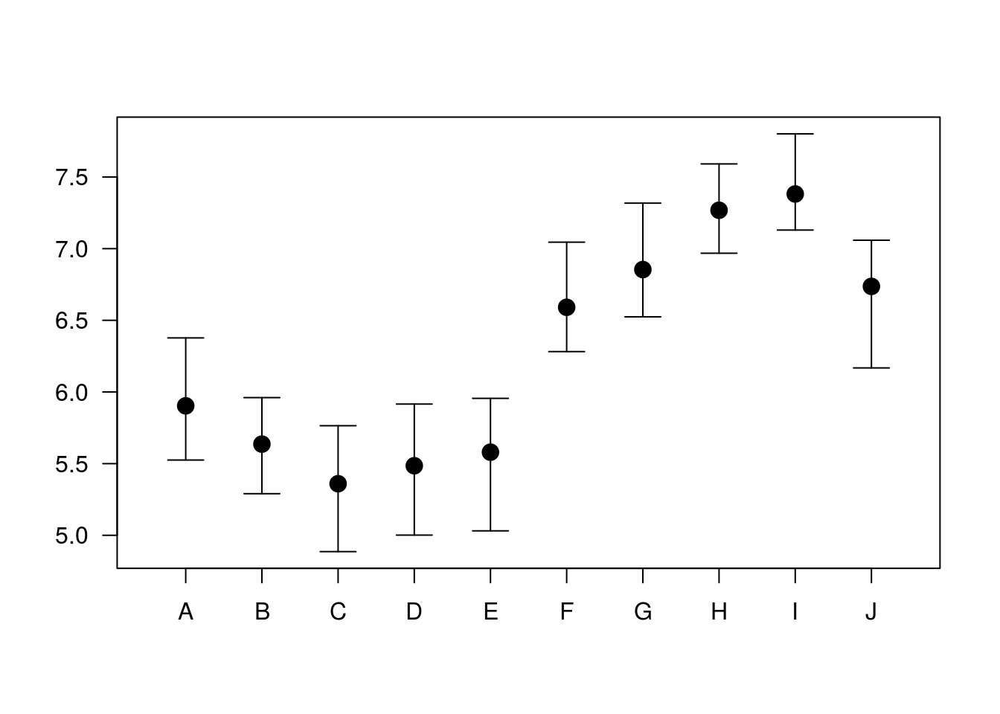
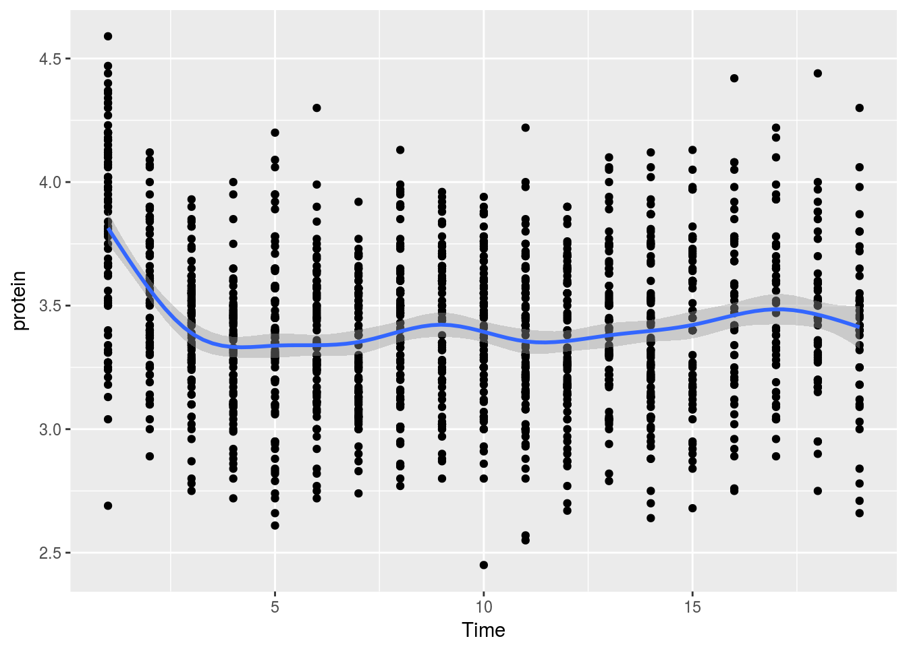
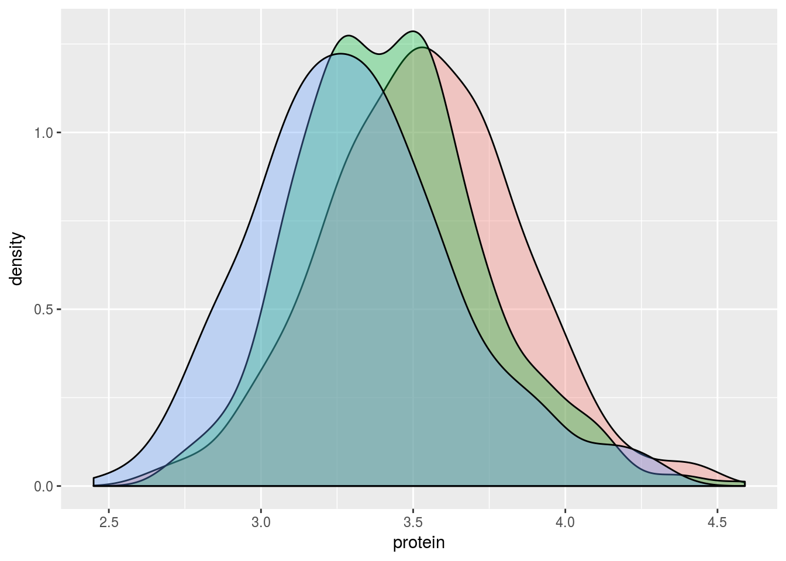
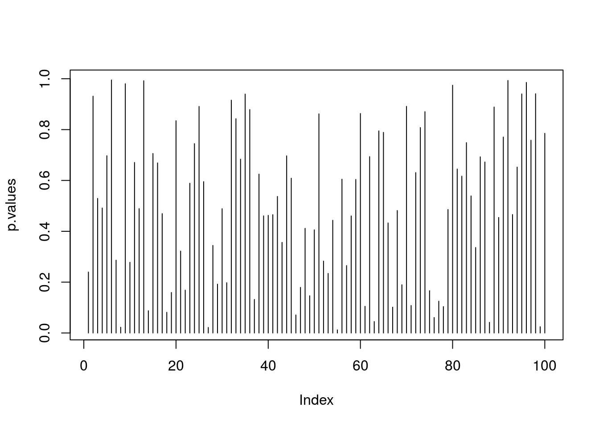

Chapter 9 Multivariate Data Analysis
The term “multivariate data analysis” is so broad and so overloaded, that we start by clarifying what is discussed and what is not discussed in this chapter. Broadly speaking, we will discuss statistical inference, and leave more “exploratory flavored” matters like clustering, and visualization, to the Unsupervised Learning Chapter 11.
We start with an example.
Formally, let \(y\) be single (random) measurement of a \(p\)-variate random vector. Denote \(\mu:=E[y]\). Here is the set of problems we will discuss, in order of their statistical difficulty.
Signal detection: a.k.a. multivariate hypothesis testing, i.e., testing if \(\mu\) equals \(\mu_0\) and for \(\mu_0=0\) in particular. In our example: “are the current measurement different than a typical one?”
Signal counting: Counting the number of elements in \(\mu\) that differ from \(\mu_0\), and for \(\mu_0=0\) in particular. In our example: “how many measurements differ than their typical values?”
Signal identification: a.k.a. multiple testing, i.e., testing which of the elements in \(\mu\) differ from \(\mu_0\) and for \(\mu_0=0\) in particular. In the ANOVA literature, this is known as a post-hoc analysis. In our example: “which measurements differ than their typical values?”
Signal estimation: Estimating the magnitudes of the departure of \(\mu\) from \(\mu_0\), and for \(\mu_0=0\) in particular. If estimation follows a signal detection or signal identification stage, this is known as a selective estimation problem. In our example: “what is the value of the measurements that differ than their typical values?”
Multivariate Regression: a.k.a. MANOVA in statistical literature, and structured learning in the machine learning literature. In our example: “what factors affect the physiological measurements?”
Another possible question is: does a multivariate analysis gives us something we cannot get from a mass-univariate analysis (i.e., a multivariate analysis on each variable separately). In Example 9.1 we could have just performed multiple univariate tests, and sign an alarm when any of the univariate detectors was triggered. The reason we want a multivariate detector, and not multiple univariate detectors is that it is possible that each measurement alone is borderline, but together, the signal accumulates. In our ICU example is may mean that the pulse is borderline, the body temperature is borderline, etc. Analyzed simultaneously, it is clear that the patient is in distress.
The next figure16 illustrates the idea that some bi-variate measurements may seem ordinary univariately, while very anomalous when examined bi-variately.
##
## Attaching package: 'ellipse'## The following object is masked from 'package:graphics':
##
## pairs
9.1 Signal Detection
Signal detection deals with the detection of the departure of \(\mu\) from some \(\mu_0\), and especially, \(\mu_0=0\). This problem can be thought of as the multivariate counterpart of the univariate hypothesis t-test.
9.1.1 Hotelling’s T2 Test
The most fundamental approach to signal detection is a mere generalization of the t-test, known as Hotelling’s \(T^2\) test.
Recall the univariate t-statistic of a data vector \(x\) of length \(n\): \[\begin{align} t^2(x):= \frac{(\bar{x}-\mu_0)^2}{Var[\bar{x}]}= (\bar{x}-\mu_0)Var[\bar{x}]^{-1}(\bar{x}-\mu_0), \tag{9.1} \end{align}\]where \(Var[\bar{x}]=S^2(x)/n\), and \(S^2(x)\) is the unbiased variance estimator \(S^2(x):=(n-1)^{-1}\sum (x_i-\bar x)^2\).
Generalizing Eq(9.1) to the multivariate case: \(\mu_0\) is a \(p\)-vector, \(\bar x\) is a \(p\)-vector, and \(Var[\bar x]\) is a \(p \times p\) matrix of the covariance between the \(p\) coordinated of \(\bar x\). When operating with vectors, the squaring becomes a quadratic form, and the division becomes a matrix inverse. We thus have \[\begin{align} T^2(x):= (\bar{x}-\mu_0)' Var[\bar{x}]^{-1} (\bar{x}-\mu_0), \tag{9.2} \end{align}\] which is the definition of Hotelling’s \(T^2\) test statistic. We typically denote the covariance between coordinates in \(x\) with \(\hat \Sigma(x)\), so that \(\widehat \Sigma_{k,l}:=\widehat {Cov}[x_k,x_l]=(n-1)^{-1} \sum (x_{k,i}-\bar x_k)(x_{l,i}-\bar x_l)\). Using the \(\Sigma\) notation, Eq.(9.2) becomes \[\begin{align} T^2(x):= n (\bar{x}-\mu_0)' \hat \Sigma(x)^{-1} (\bar{x}-\mu_0), \end{align}\]which is the standard notation of Hotelling’s test statistic.
For inference, we need the null distribution of Hotelling’s test statistic. For this we introduce some vocabulary17:
- Low Dimension: We call a problem low dimensional if \(n \gg p\), i.e. \(p/n \approx 0\). This means there are many observations per estimated parameter.
- High Dimension: We call a problem high dimensional if \(p/n \to c\), where \(c\in (0,1)\). This means there are more observations than parameters, but not many.
- Very High Dimension: We call a problem very high dimensional if \(p/n \to c\), where \(1<c<\infty\). This means there are less observations than parameter.
Hotelling’s \(T^2\) test can only be used in the low dimensional regime. For some intuition on this statement, think of taking \(n=20\) measurements of \(p=100\) physiological variables. We seemingly have \(20\) observations, but there are \(100\) unknown quantities in \(\mu\). Would you trust your conclusion that \(\bar x\) is different than \(\mu_0\) based on merely \(20\) observations.
The above criticism is formalized in @bai1996effect. For modern applications, Hotelling’s \(T^2\) is not recommended, since many modern alternatives have been made available. See @rosenblatt2016better and references for a review.
9.1.2 Various Types of Signal to Detect
In the previous, we assumed that the signal is a departure of \(\mu\) from some \(\mu_0\). For vactor-valued data \(y\), that is distributed \(F\), we may define “signal” as any departure from some \(F_0\). This is the multivaraite counterpart of goodness-of-fit (GOF) tests.
Even when restricting “signal” to departures of \(\mu\) from \(\mu_0\), we may try to detect various types of signal:
- Dense Signal: when the departure is in all coordinates of \(\mu\).
- Sparse Signal: when the departure is in a subset of coordinates of \(\mu\).
A manufactoring motivation is consistent with a dense signal: if a manufacturing process has failed, we expect a change in many measurements (i.e. coordinates of \(\mu\)). A brain-imaging motivation is consistent with a dense signal: if a region encodes cognitive function, we expect a change in many brain locations (i.e. coordinates of \(\mu\).) A genetic motivation is consistent with a sparse signal: if susceptibility of disease is genetic, only a small subset of locations in the genome will encode it.
Hotelling’s \(T^2\) statistic is designed for dense signal. The following is a simple statistic designed for sparse signal.
9.1.3 Simes’ Test
Hotelling’s \(T^2\) statistic has currently two limitations: It is designed for dense signals, and it requires estimating the covariance, which is a very difficult problem.
An algorithm, that is sensitive to sparse signal and allows statistically valid detection under a wide range of covariances (even if we don’t know the covariance) is known as Simes’ Test. The statistic is defined vie the following algorithm:
- Compute \(p\) variable-wise p-values: \(p_1,\dots,p_j\).
- Denote \(p_{(1)},\dots,p_{(j)}\) the sorted p-values.
- Simes’ statistic is \(p_{Simes}:=min_j\{p_{(j)} \times p/j\}\).
- Reject the “no signal” null hypothesis at significance \(\alpha\) if \(p_{Simes}<\alpha\).
9.1.4 Signal Detection with R
Let’s generate some data with no signal.
library(mvtnorm)
n <- 100 # observations
p <- 18 # parameter dimension
mu <- rep(0,p) # no signal
x <- rmvnorm(n = n, mean = mu)
dim(x)## [1] 100 18lattice::levelplot(x)
Now make our own Hotelling function.
hotellingOneSample <- function(x, mu0=rep(0,ncol(x))){
n <- nrow(x)
p <- ncol(x)
stopifnot(n > 5* p)
bar.x <- colMeans(x)
Sigma <- var(x)
Sigma.inv <- solve(Sigma)
T2 <- n * (bar.x-mu0) %*% Sigma.inv %*% (bar.x-mu0)
p.value <- pchisq(q = T2, df = p, lower.tail = FALSE)
return(list(statistic=T2, pvalue=p.value))
}
hotellingOneSample(x)## $statistic
## [,1]
## [1,] 17.22438
##
## $pvalue
## [,1]
## [1,] 0.5077323Things to note:
stopifnot(n > 5 * p)is a little verification to check that the problem is indeed low dimensional. Otherwise, the \(\chi^2\) approximation cannot be trusted.solvereturns a matrix inverse.%*%is the matrix product operator (see alsocrossprod()).- A function may return only a single object, so we wrap the statistic and its p-value in a
listobject.
Just for verification, we compare our home made Hotelling’s test, to the implementation in the rrcov package. The statistic is clearly OK, but our \(\chi^2\) approximation of the distribution leaves room to desire. Personally, I would never trust a Hotelling test if \(n\) is not much greater than \(p\), in which case I would use a high-dimensional adaptation (see Bibliography).
rrcov::T2.test(x)##
## One-sample Hotelling test
##
## data: x
## T2 = 17.22400, F = 0.79259, df1 = 18, df2 = 82, p-value = 0.703
## alternative hypothesis: true mean vector is not equal to (0, 0, 0, 0, 0, 0, 0, 0, 0, 0, 0, 0, 0, 0, 0, 0, 0, 0)'
##
## sample estimates:
## [,1] [,2] [,3] [,4] [,5]
## mean x-vector -0.01746212 0.03776332 0.1006145 -0.2083005 0.1026982
## [,6] [,7] [,8] [,9] [,10]
## mean x-vector -0.05220043 -0.009497987 -0.1139856 0.02851701 -0.03089953
## [,11] [,12] [,13] [,14] [,15]
## mean x-vector -0.02457798 -0.1270753 0.04717076 0.01683591 0.03085023
## [,16] [,17] [,18]
## mean x-vector 0.1499485 -0.07630663 0.1004852Let’s do the same with Simes’:
Simes <- function(x){
p.vals <- apply(x, 2, function(z) t.test(z)$p.value) # Compute variable-wise pvalues
p <- ncol(x)
p.Simes <- p * min(sort(p.vals)/seq_along(p.vals)) # Compute the Simes statistic
return(c(pvalue=p.Simes))
}
Simes(x)## pvalue
## 0.6398998And now we verify that both tests can indeed detect signal when present. Are p-values small enough to reject the “no signal” null hypothesis?
mu <- rep(x = 10/p,times=p) # inject signal
x <- rmvnorm(n = n, mean = mu)
hotellingOneSample(x)## $statistic
## [,1]
## [1,] 686.8046
##
## $pvalue
## [,1]
## [1,] 3.575926e-134Simes(x)## pvalue
## 2.765312e-10… yes. All p-values are very small, so that all statistics can detect the non-null distribution.
9.2 Signal Counting
There are many ways to approach the signal counting problem. For the purposes of this book, however, we will not discuss them directly, and solve the signal counting problem as a signal identification problem: if we know where \(\mu\) departs from \(\mu_0\), we only need to count coordinates to solve the signal counting problem.
9.3 Signal Identification
The problem of signal identification is also known as selective testing, or more commonly as multiple testing.
In the ANOVA literature, an identification stage will typically follow a detection stage. These are known as the omnibus F test, and post-hoc tests, respectively. In the multiple testing literature there will typically be no preliminary detection stage. It is typically assumed that signal is present, and the only question is “where?”
The first question when approaching a multiple testing problem is “what is an error”? Is an error declaring a coordinate in \(\mu\) to be different than \(\mu_0\) when it is actually not? Is an error an overly high proportion of falsely identified coordinates? The former is known as the family wise error rate (FWER), and the latter as the false discovery rate (FDR).
9.3.1 Signal Identification in R
One (of many) ways to do signal identification involves the stats::p.adjust function. The function takes as inputs a \(p\)-vector of the variable-wise p-values. Why do we start with variable-wise p-values, and not the full data set?
- Because we want to make inference variable-wise, so it is natural to start with variable-wise statistics.
- Because we want to avoid dealing with covariances if possible. Computing variable-wise p-values does not require estimating covariances.
- So that the identification problem is decoupled from the variable-wise inference problem, and may be applied much more generally than in the setup we presented.
We start be generating some high-dimensional multivariate data and computing the coordinate-wise (i.e. hypothesis-wise) p-value.
library(mvtnorm)
n <- 1e1
p <- 1e2
mu <- rep(0,p)
x <- rmvnorm(n = n, mean = mu)
dim(x)## [1] 10 100lattice::levelplot(x)
We now compute the pvalues of each coordinate. We use a coordinate-wise t-test. Why a t-test? Because for the purpose of demonstration we want a simple test. In reality, you may use any test that returns valid p-values.
t.pval <- function(y) t.test(y)$p.value
p.values <- apply(X = x, MARGIN = 2, FUN = t.pval)
plot(p.values, type='h')
Things to note:
t.pvalis a function that merely returns the p-value of a t.test.- We used the
applyfunction to apply the same function to each column ofx. MARGIN=2tellsapplyto compute over columns and not rows.- The output,
p.values, is a vector of 100 p-values.
We are now ready to do the identification, i.e., find which coordinate of \(\mu\) is different than \(\mu_0=0\). The workflow for identification has the same structure, regardless of the desired error guarantees:
- Compute an
adjusted p-value. - Compare the adjusted p-value to the desired error level.
If we want \(FWER \leq 0.05\), meaning that we allow a \(5\%\) probability of making any mistake, we will use the method="holm" argument of p.adjust.
alpha <- 0.05
p.values.holm <- p.adjust(p.values, method = 'holm' )
which(p.values.holm < alpha)## integer(0)If we want \(FDR \leq 0.05\), meaning that we allow the proportion of false discoveries to be no larger than \(5\%\), we use the method="BH" argument of p.adjust.
alpha <- 0.05
p.values.BH <- p.adjust(p.values, method = 'BH' )
which(p.values.BH < alpha)## integer(0)We now inject some strong signal in \(\mu\) just to see that the process works. We will artificially inject signal in the first 10 coordinates.
mu[1:10] <- 2 # inject signal in first 10 variables
x <- rmvnorm(n = n, mean = mu) # generate data
p.values <- apply(X = x, MARGIN = 2, FUN = t.pval)
p.values.BH <- p.adjust(p.values, method = 'BH' )
which(p.values.BH < alpha)## [1] 1 2 3 4 5 6 7 9 10 55Indeed- we are now able to detect that the first coordinates carry signal, because their respective coordinate-wise null hypotheses have been rejected.
9.4 Signal Estimation (*)
The estimation of the elements of \(\mu\) is a seemingly straightforward task. This is not the case, however, if we estimate only the elements that were selected because they were significant (or any other data-dependent criterion). Clearly, estimating only significant entries will introduce a bias in the estimation. In the statistical literature, this is known as selection bias. Selection bias also occurs when you perform inference on regression coefficients after some model selection, say, with a lasso, or a forward search18.
Selective inference is a complicated and active research topic so we will not offer any off-the-shelf solution to the matter. The curious reader is invited to read @rosenblatt2014selective, @javanmard2014confidence, or Will Fithian’s PhD thesis [@fithian2015topics] for more on the topic.
9.5 Multivariate Regression (*)
Multivaraite regression, a.k.a. MANOVA, similar to structured learning in machine learning, is simply a regression problem where the outcome, \(y\), is not scalar values but vector valued. It is not to be confused with multiple regression where the predictor, \(x\), is vector valued, but the outcome is scalar.
If the linear models generalize the two-sample t-test from two, to multiple populations, then multivariate regression generalizes Hotelling’s test in the same way.
When the entries of \(y\) are independent, MANOVA collapses to multiple univariate regressions. It is only when entries in \(y\) are correlated that we can gain in accuracy and power by harnessing these correlations through the MANOVA framework.
9.5.1 Multivariate Regression with R
TODO
9.6 Graphical Models (*)
Fitting a multivariate distribution, i.e. learning a graphical model, is a very hard task. To see why, consider the problem of \(p\) continuous variables. In the simplest case, where we can assume normality, fitting a distributions means estimating the \(p\) parameters in the expectation, \(\mu\), and \(p(p+1)/2\) parameters in the covariance, \(\Sigma\). The number of observations required for this task, \(n\), may be formidable.
A more humble task, is to identify independencies, known as structure learning in the machine learning literature. Under the multivariate normality assumption, this means identifying zero entries in \(\Sigma\), or more precisely, zero entries in \(\Sigma^{-1}\). This task can be approached as a signal identification problem (9.3). The same solutions may be applied to identify non-zero entries in \(\Sigma\), instead of \(\mu\) as discussed until now.
If multivariate normality cannot be assumed, then identifying independencies cannot be done via the covariance matrix \(\Sigma\) and more elaborate algorithms are required.
9.6.1 Graphical Models in R
TODO
9.7 Biblipgraphic Notes
For a general introduction to multivariate data analysis see @anderson2004introduction. For an R oriented introduction, see @everitt2011introduction. For more on the difficulties with high dimensional problems, see @bai1996effect. For some cutting edge solutions for testing in high-dimension, see @rosenblatt2016better and references therein. Simes’ test is not very well known. It is introduced in @simes1986improved, and proven to control the type I error of detection under a PRDS type of dependence in @benjamini2001control. For more on multiple testing, and signal identification, see @efron2012large. For more on the choice of your error rate see @rosenblatt2013practitioner. For an excellent review on graphical models see @kalisch2014causal. Everything you need on graphical models, Bayesian belief networks, and structure learning in R, is collected in the Task View.
9.8 Practice Yourself
Generate multivariate data with:
set.seed(3) mean<-rexp(50,6) multi<- rmvnorm(n = 100, mean = mean)- Use Hotelling’s test to determine if \(\mu\) equals \(\mu_0=0\). Can you detect the signal?
- Perform t.test on each variable and extract the p-value. Try to identify visually the variables which depart from \(\mu_0\).
- Use
p.adjustto identify in which variables there are any departures from \(\mu_0=0\). Allow 5% probability of making any false identification. - Use
p.adjustto identify in which variables there are any departures from \(\mu_0=0\). Allow a 5% proportion of errors within identifications.
- Generate multivariate data from two groups:
rmvnorm(n = 100, mean = rep(0,10))for the first, andrmvnorm(n = 100, mean = rep(0.1,10))for the second.- Do we agree the groups differ?
- Implement the two-group Hotelling test described in Wikipedia: (https://en.wikipedia.org/wiki/Hotelling%27s_T-squared_distribution#Two-sample_statistic).
- Verify that you are able to detect that the groups differ.
- Perform a two-group t-test on each coordinate. On which coordinates can you detect signal while controlling the FWER? On which while controlling the FDR? Use
p.adjust.
Return to the previous problem, but set
n=9. Verify that you cannot compute your Hotelling statistic.
My thanks to Efrat Vilneski for the figure.↩
This vocabulary is not standard in the literature, so when you read a text, you need to verify yourself what the author means.↩
You might find this shocking, but it does mean that you cannot trust the
summarytable of a model that was selected from a multitude of models.↩